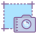

<ul class="createToolbar">
    <li title="Upload 3D Models (.ply)" [ngClass]="{'no':enableTools.uploadFile == false}">
        <label (click)="openFileDialog()" >
            
        </label>
    </li>
    <li title="Scale" (click)="toggleScale()" [ngClass]="{'no':enableTools.scale == false, 'hovered':addPoints}"></li>
    <li title="Auto Rotate" (click)="doAutoRotate()" [ngClass]="{'no':enableTools.autorotate == false}"></li>
    <li title="Invert" (click)="showInvertPopUpInfo()" [ngClass]="{'no':enableTools.invert == false}"></li>
    <li title="3D Crop" (click)="toggleCrop3D()" [ngClass]="{'no':enableTools.threedcrop == false, 'hovered':cropToolsInfo}"></li>
    <li title="Measure" (click)="enableMeasure()" [ngClass]="{'no':enableTools.measure == false, 'hovered':distancePoints}"></li>
    <li title="3D Model Snapshot" (click)="saveScreenshot()" [ngClass]="{'no':enableTools.snapshot == false}"></li>
    <li title="Fullscreen (F)" (click)="toggleFullScreen()" [ngClass]="{'no':enableTools.fullscreen == false}"></li>
    <li title="Flat View of Model" (click)="showModelFlat()" [ngClass]="{'no':enableTools.flat == false}"></li>
    <li title="Save" (click)="showSavePopUpInfo()" [ngClass]="{'no':enableTools.save == false}"></li>
</ul>

<input
  #uploadImageModel
  type="file"
  (change)="onFileChanged($event)"
  accept=".ply"
  style="display:none;" />

<div class="clear"></div>

<div id="topCreate">
    <ngx-spinner></ngx-spinner>
    <lib-ngx-notification></lib-ngx-notification>
    <div id="threedviewer" #threedviewer></div>
</div>

<div id="resizerCreateProject"></div>

<div class="popupinfobackground" *ngIf=" scalePopUpInfo === true " (click)="closeScalePopUp()">
    <div id="scalePopUp" class="popupinfo" (click)="$event.stopPropagation()">
        <div class="closeWindow" (click)="closeScalePopUp()">
            
        </div>
        <div class="distanceText">Enter the Distance Between selected 2 Points in (mm)</div>
        <input id="distance" [(ngModel)]="distance" (keyup)="validateDistance($event)" >
        <button id="doScale" (click)="doScale()">OK</button>
    </div>
</div>

<div class="popupinfobackground" *ngIf=" savePopUpInfo === true " (click)="savePopUpInfo = false">
    <div id="saveAsPopUp" class="popupinfo" (click)="$event.stopPropagation()">
        <div class="closeWindow" (click)="savePopUpInfo = false" ></div>
        <div id="saveAs">Save As</div>
        <br>
        <input [(ngModel)]="saveFileName">
        <select [(ngModel)]="saveFileType">
            <option *ngFor="let c of fileTypes" [ngValue]="c.name">{{c.name}}</option>
        </select>
        <button (click)="doSaveAs()">OK</button>
    </div>
</div>

<div class="popupinfobackground" *ngIf=" invertPopUpInfo === true " (click)="invertPopUpInfo = false">
    <div id="invert" class="popupinfo" (click)="$event.stopPropagation()">
        <div class="closeWindow" (click)="invertPopUpInfo = false" >
            
        </div>
        <div class="invertText">Invert Options</div>
        <label>
            <input type="checkbox" [(ngModel)]="xAxis" > X
        </label>
        <label>
            <input type="checkbox" [(ngModel)]="yAxis" > Y
        </label>
        <label>
            <input type="checkbox" [(ngModel)]="zAxis" > Z
        </label>
        <br>
        <button (click)="doInvert()">OK</button>
    </div>
</div>

<div id="cropTools" *ngIf=" cropToolsInfo === true ">
    <span>Crop Tools</span>
    <input type="range" step="0.001" id="leftCrop" (input)="doCrop($event)" max="{{ maxLeftCrop }}" min="{{ minLeftCrop }}" value="{{leftCropValue}}" /><label for="leftCrop">Left</label>
    <input type="range" step="0.001" id="rightCrop" (input)="doCrop($event)" max="{{ maxRightCrop }}" min="{{ minRightCrop }}" value="{{rightCropValue}}" /><label for="leftCrop">Right</label>
    <input type="range" step="0.001" id="topCrop" (input)="doCrop($event)" max="{{ maxTopCrop }}" min="{{ minTopCrop }}" value="{{topCropValue}}" /><label for="leftCrop">Top</label>
    <input type="range" step="0.001" id="bottomCrop" (input)="doCrop($event)" max="{{ maxBottomCrop }}" min="{{ minBottomCrop }}" value="{{bottomCropValue}}" /><label for="leftCrop">Bottom</label>
    <input type="range" step="0.001" id="zCrop" (input)="doCrop($event)" max="{{ maxZCrop }}" min="{{ minZCrop }}" value="{{zCropValue}}" /><label for="leftCrop">Z Axis</label><br>
    <input type="checkbox" id="helpers" [(ngModel)]="helpers.visible" (change)="toggleHelpers( $event )" /><label for="helpers">Show Helpers</label><br>
    <button (click)="resetCroppingToolValues()">Reset</button>
</div>

<div class="popupinfobackground" *ngIf=" measurePopUpInfo === true " (click)="measurePopUpInfo = false">
    <div id="measurePopup" class="popupinfo" (click)="$event.stopPropagation()">
        <div class="closeWindow" (click)="measurePopUpInfo = false">
            
        </div>
        <span>{{this.measureDistance}} mm</span>
    </div>
</div>
